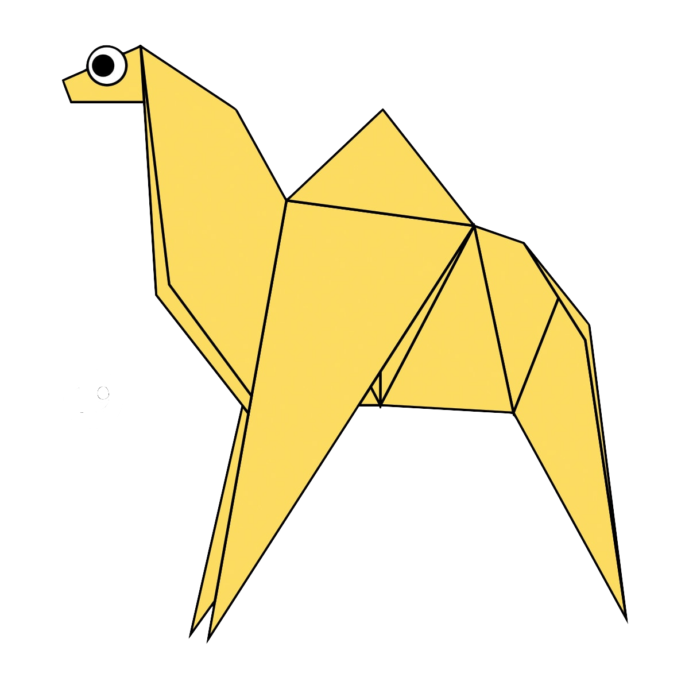

Origami Designs
About Us
Follow Us

Interesting facts about Camels
They have furry ears.
They can move easily across the sand due to their specially designed feet.
They drink a lot of water when they see it.

Interesting facts about Chameleons
They are reptiles.
Their coulour changing abilty is important for communication.
Most have a prehensile tail that can be wrapped around a tree.

Interesting facts about Pigeons
They are intelligent and complex.
Renouned for their outstanding navigation abilities.
Have excellent hearing.

Interesting facts about Bears
At birth, bear cubs are blind.
The brown bear is the largest predator still living on the continent of Europe.
Bears have a particularly good nose.

Interesting facts about Pandas
Giant pandas can swim.
Their eyes are different to normal bears.
Bamboos are critical in their diet.

Interesting facts about Cicadas
They have a short lifespan.
Humans eat them too.
Most have red orange eyes.